Brief: restrained dark sci-fi HUD · near-black surfaces · one cyan accent used sparingly · dense but calm · motion subtle and purposeful · no purple gradients, no stock component-library look. Each direction mocks the three signature screens at 1440×900 as static HTML with its tokens inlined (no framework). Whichever wins becomes design/tokens.json in milestone M01 and the component library in M02.
The console as an instrument panel: a hairline modular grid, every panel labelled and numbered like a readout, monospace data with condensed uppercase headers, corner brackets on the focused panel. Cyan is spent only on what is live right now — the current step, the streaming value, the active nav underline, the one primary control — so the eye finds change without scanning. Dense by design (the task view shows queue, plan, tool calls, output, approval and timeline at once) and calm because nothing is filled, glowing or rounded; motion is limited to numbers ticking, hairline sweeps and a breathing core. This is the closest to today's chrome, refined rather than replaced, and the cheapest to reach.
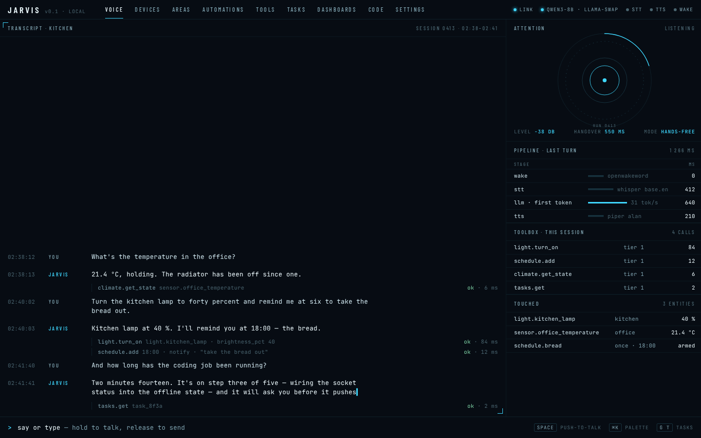
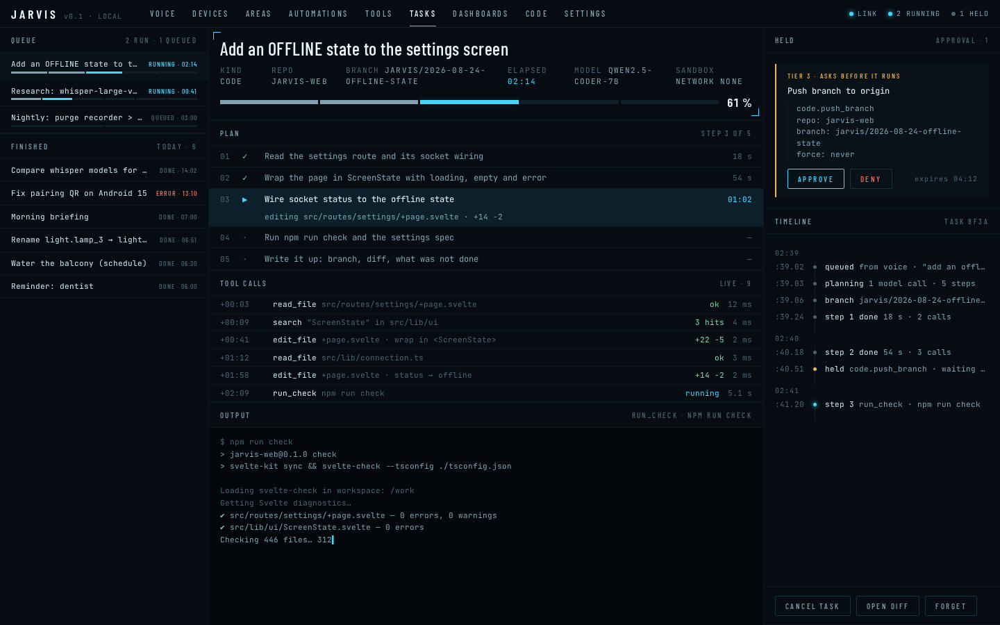
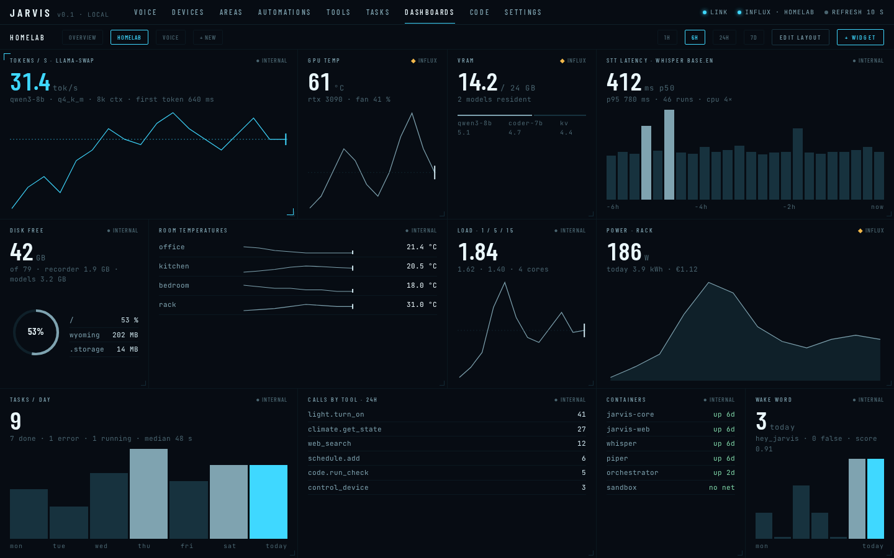
No panels at all. The interface is a typographic document — a masthead, columns divided by hairlines, a marginalia column for timestamps and tool calls, figures set large and light, tables with tabular numerals — so the density comes from information, not chrome. Neutral near-black rather than blue-black, IBM Plex Sans at reading sizes with Plex Mono for anything measured. Cyan appears only as a 2 px rule beside the thing that is happening, a caret, and an underlined action, which keeps a tier-3 approval unmistakable without a coloured button. Motion is fades and a single breathing dot. It reads like Jarvis keeping a ledger of what it did and why — the most legible for long sessions, the least "HUD" of the three, and the furthest from the current UI.
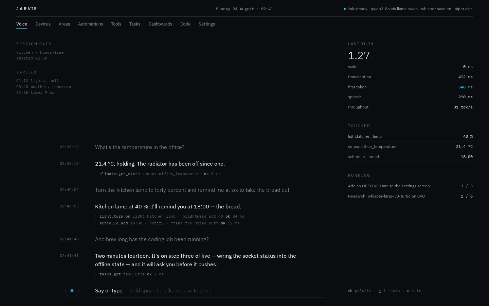
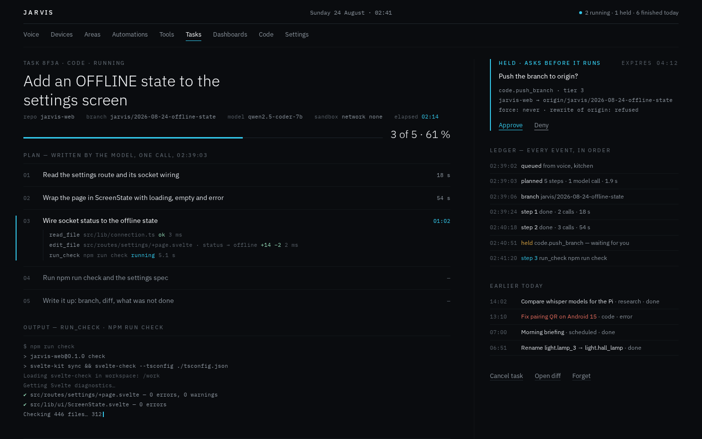
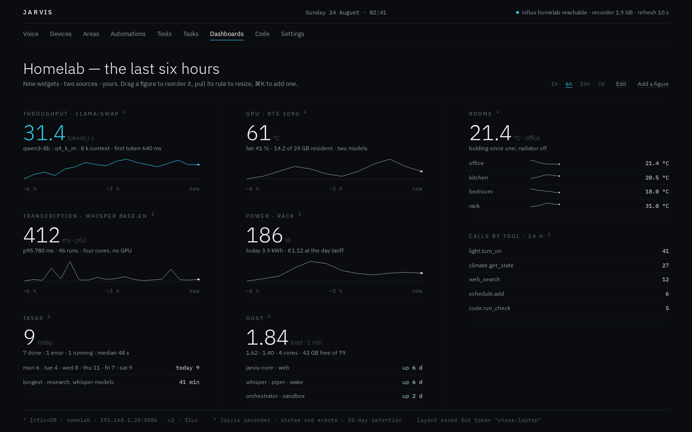
Composition around a single light source. The orb (already Jarvis's identity on the phone and the HUD) becomes the organising centre; content sits on floating glass panels around it, tasks are a radial progress ring with the plan as arc segments, dashboards are cards on a dark field with the live series drawn as a glowing area. The deepest black and the brightest cyan of the three, with cyan doing real work as emitted light — glow on the current step, the push-to-talk ring, one filled APPROVE button — and everything else kept to thin rings and dim geometric type (Space Grotesk 300/400). Motion is slow rotation and breathing, always tied to state. The most cinematic, the most at risk of tipping into stock sci-fi if the glow budget is not policed, and the most work to build well.
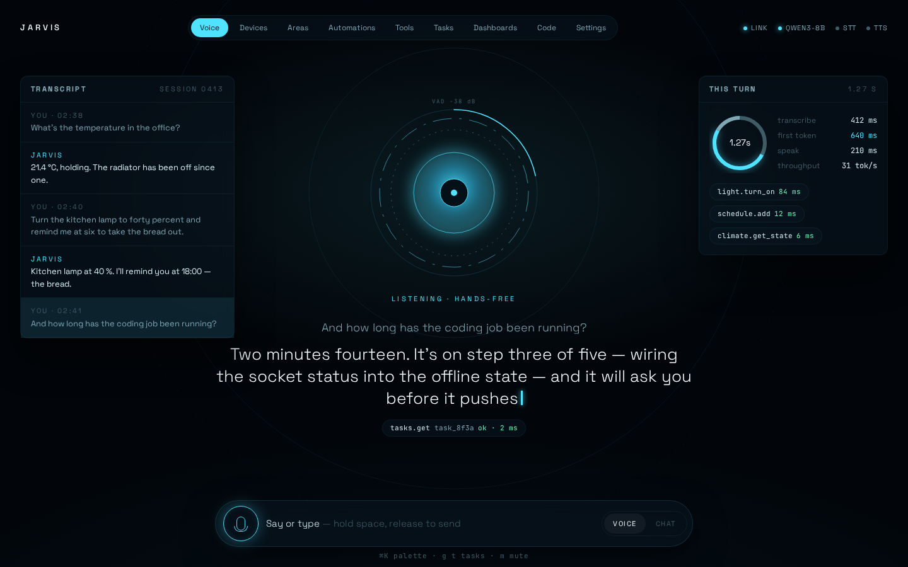
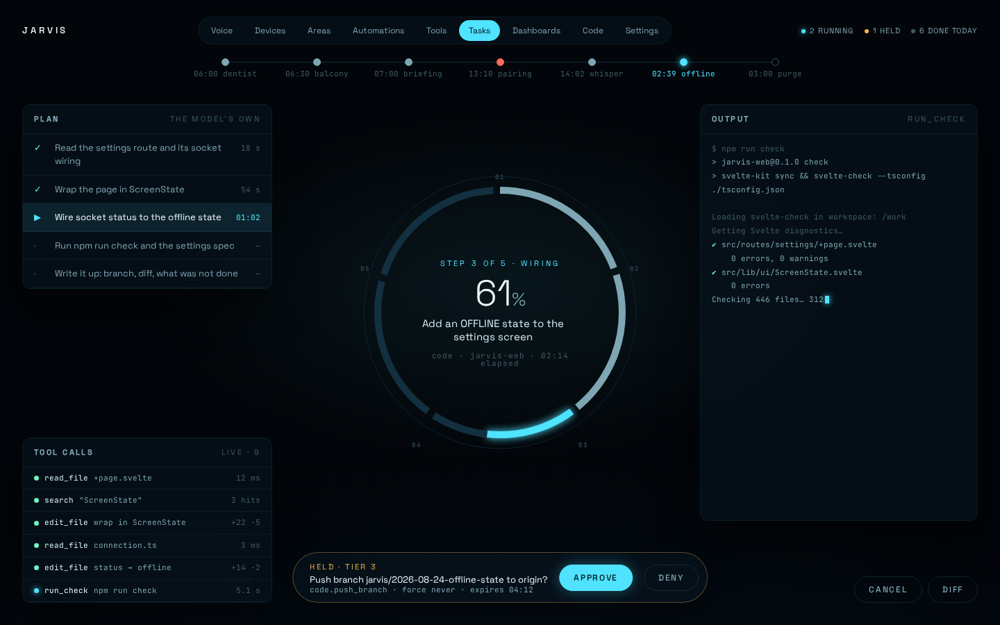
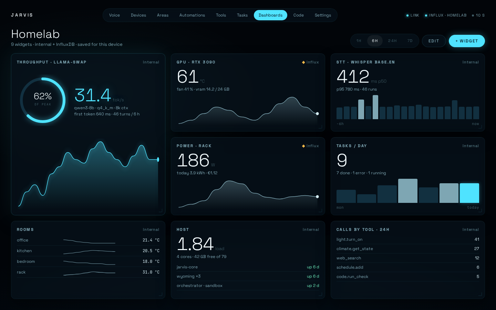
The same composition, taken further and made quieter. The reactor is now an instrument rather than a glowing sphere: a graduated bezel, a ring of blades with a glint travelling round it, a counter-rotating coil, a level arc that breathes with the microphone, and a dark lens with one thin luminous rim and two slow iris arcs inside — the same object drives the voice screen, the task ring (blades grouped by step) and the dashboard's hero figure. The glass blur, the pill nav and the filled-cyan chips are gone; panels are flat hairline surfaces, the tab strip is uppercase Barlow with a sliding underline and a live-count badge, and cyan is spent on the current step, the level, the one APPROVE. Everything moves on purpose: rotations at three speeds, entrance staggers, charts that draw in, figures that count up. UI text in Barlow, display lines in Space Grotesk 300, data in JetBrains Mono.
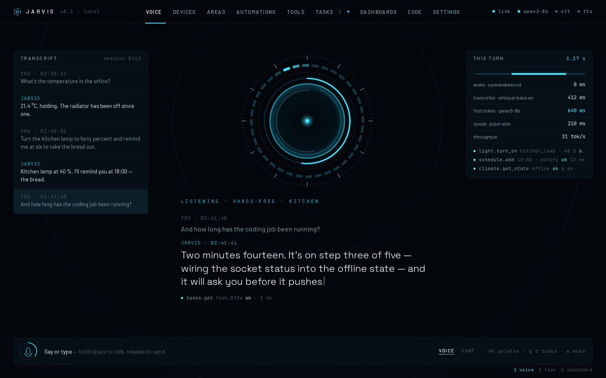
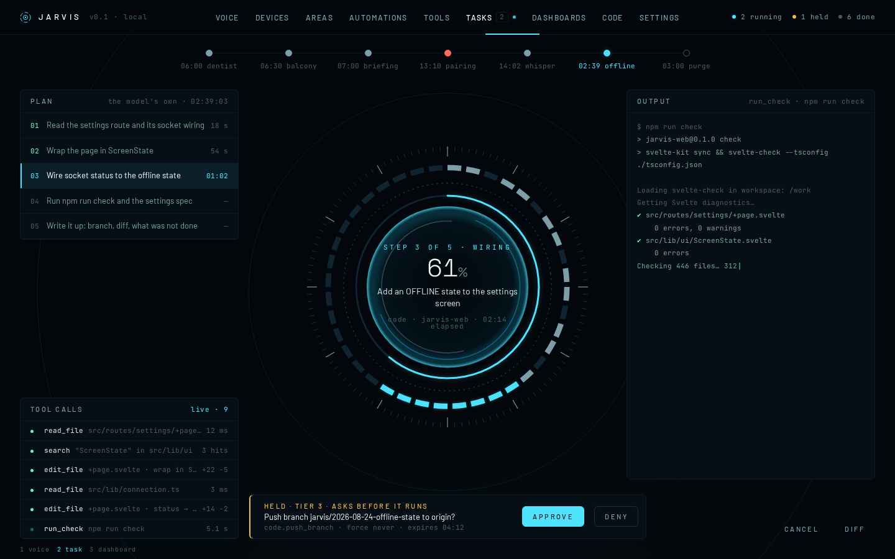
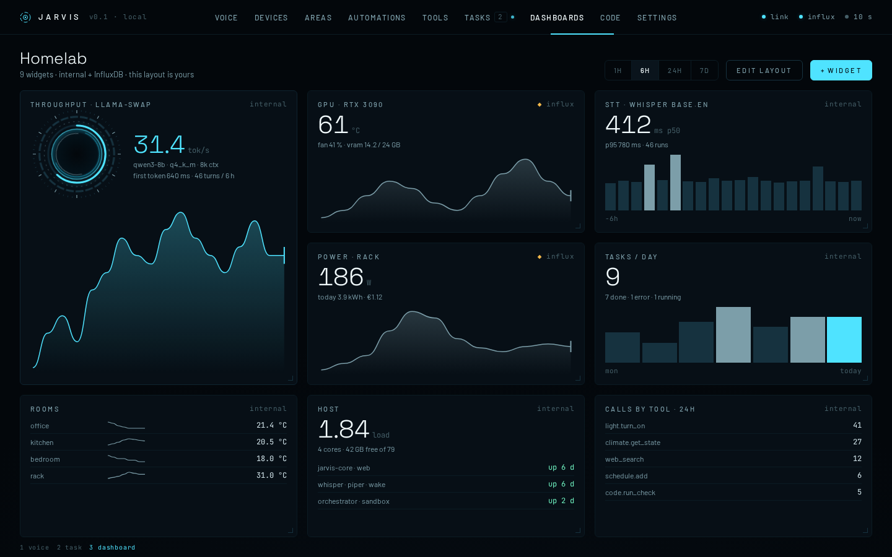
Rendered headlessly by docs/design/screenshot.mjs (Playwright Chromium, 1440×900). Fonts: Barlow Condensed, IBM Plex, JetBrains Mono, Space Grotesk — SIL Open Font License, bundled under docs/design/fonts/.